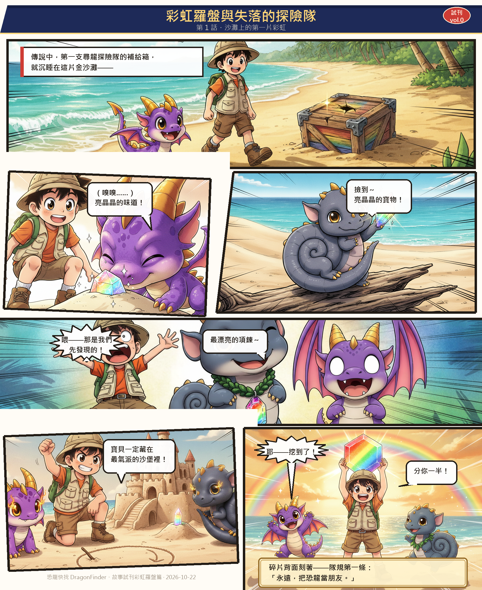
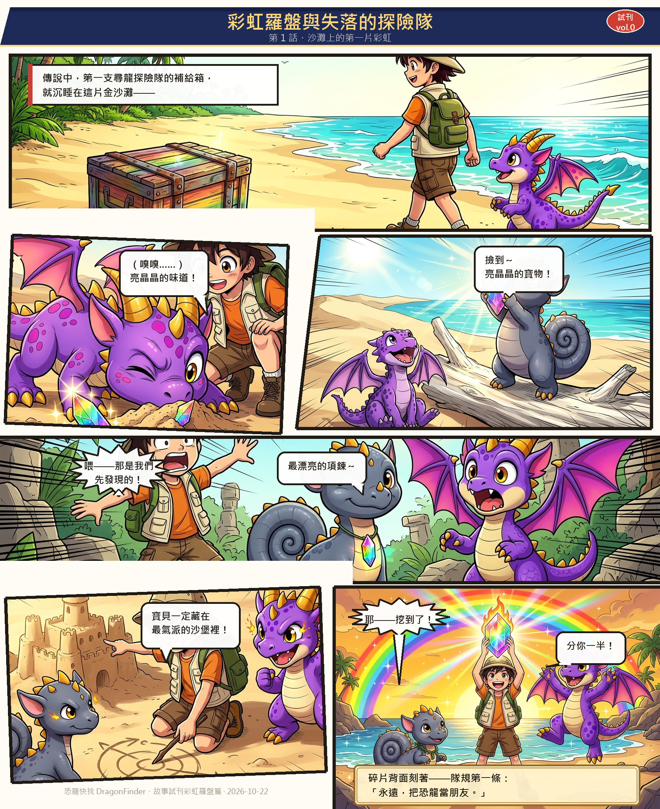
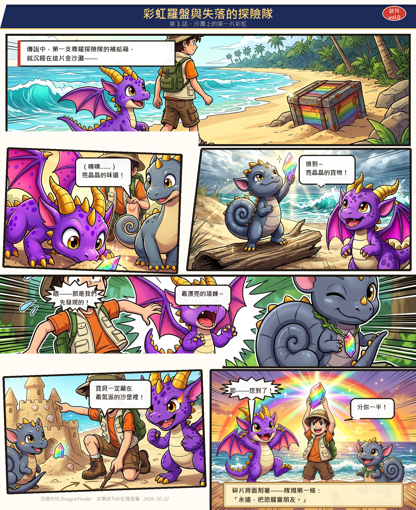

彩虹羅盤與失落的探險隊・三模型漫畫比較報告
提案 A 第 1 話「沙灘上的第一片彩虹」試刊頁｜相同提示詞 × 三種 Gemini 圖像模型｜2026-10-22
一、比較目的與方法
第 1 話試刊頁 v2（角色對齊遊戲美術＋少年漫畫風＋動態版面）已採用
gemini-2.5-flash-image 生成。為評估是否有更佳的模型選擇，
本次將完全相同的六格提示詞、相同的遊戲美術參考圖、相同的長寬比，
原封不動地餵給另外兩個 Gemini 圖像模型，比較三者的輸出差異。唯一變因是模型本身。
| 代號 | 模型 | 定位 |
|---|---|---|
| v2（基準） | gemini-2.5-flash-image | 現行試刊頁採用版本 |
| m31 | gemini-3.1-flash-image | 較新世代 flash 影像模型 |
| mnb | gemini-nano-banana-2.1 | nano-banana 系列新版 |
生成條件（三組完全相同）：伴伴參考圖
game_db/assets/dinos_2/DFD-000_伴伴_2star.png、
薩爾塔參考圖 game_db/assets/dinos/9.webp 以內容參考方式傳入，
搭配相同的 CHARACTER LOCK（紫色幼龍／石板灰捲尾蜥腳類）與少年漫畫風格前綴；
六格長寬比分別為 21:9、3:2、16:9、21:9、16:9、3:2。
組版（氣泡、對白框、標題、銘牌）使用同一套排版腳本，僅替換底圖。
二、三版完整漫畫頁
點擊圖片可開啟原始解析度（1826×2236）。






三、逐格比較
P1開場：金沙灘上的補給箱（21:9 跨格）


P2伴伴嗅到亮晶晶的味道（3:2）


P3薩爾塔撿到碎片（16:9）


P4碰撞：全員驚呼（21:9 跨格）


P5沙堡藏寶計畫（16:9）


P6結尾：彩虹碎片與隊規第一條（3:2）


四、綜合評分
| 評分項目 | v2・2.5-flash | m31・3.1-flash | mnb・nano-banana |
|---|---|---|---|
| 角色一致性（與遊戲美術） | 優 | 優 | 優 |
| 場景遵循（沙灘／地圖連結） | 6/6 格正確 | 4/6（P2 沙漠、P4 叢林） | 4/6（P2 草原、P4 森林） |
| 出場角色數遵循 | 6/6 格正確 | 4/6（P2、P3 多餘角色） | 4/6（P2、P3 多餘角色） |
| 少年漫畫風格（墨線・集線） | 最強 | 中等（偏賽璐璐動畫） | 偏西方卡通 |
| 色彩豐富度・光影 | 良好 | 良好（乾淨明亮） | 最佳（濃郁） |
| 構圖戲劇性 | 優 | 良好 | 優（P3/P6 互動最佳） |
| 長寬比遵循（一次到位） | 6/6 | 6/6 | 6/6 |
五、結論與建議
建議維持 gemini-2.5-flash-image 為正式製作模型（v2 版本）。
理由：它是唯一在「場景遵循」與「出場角色數」兩項都拿滿分的模型——這正是
「每段劇情要跟地圖作連結」的關鍵：沙灘場景錯成沙漠或叢林，會切斷劇情與遊戲地圖的連結。
同時它的墨線與集線最貼近日本少年漫畫的視覺語言。
nano-banana-2.1（mnb）色彩最濃、角色互動最有戲，適合作為「氣氛特寫格」的備援， 但正式採用前需逐格檢查場景與角色數。3.1-flash（m31）角色忠誠度好、畫面乾淨， 但場景遵循最弱，暫不建議用於本企劃。
三個模型都證實了「遊戲美術當內容參考＋CHARACTER LOCK」的手法有效—— 即使換模型，伴伴的紫色／金角／粉翅與薩爾塔的石板灰捲尾都沒有走樣。